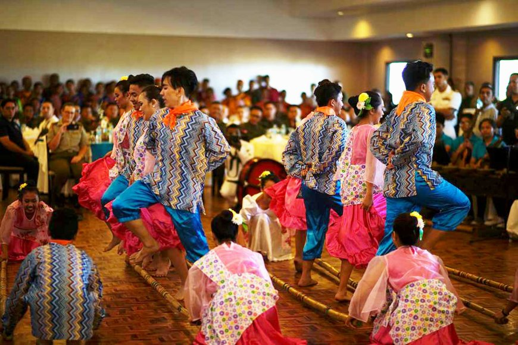
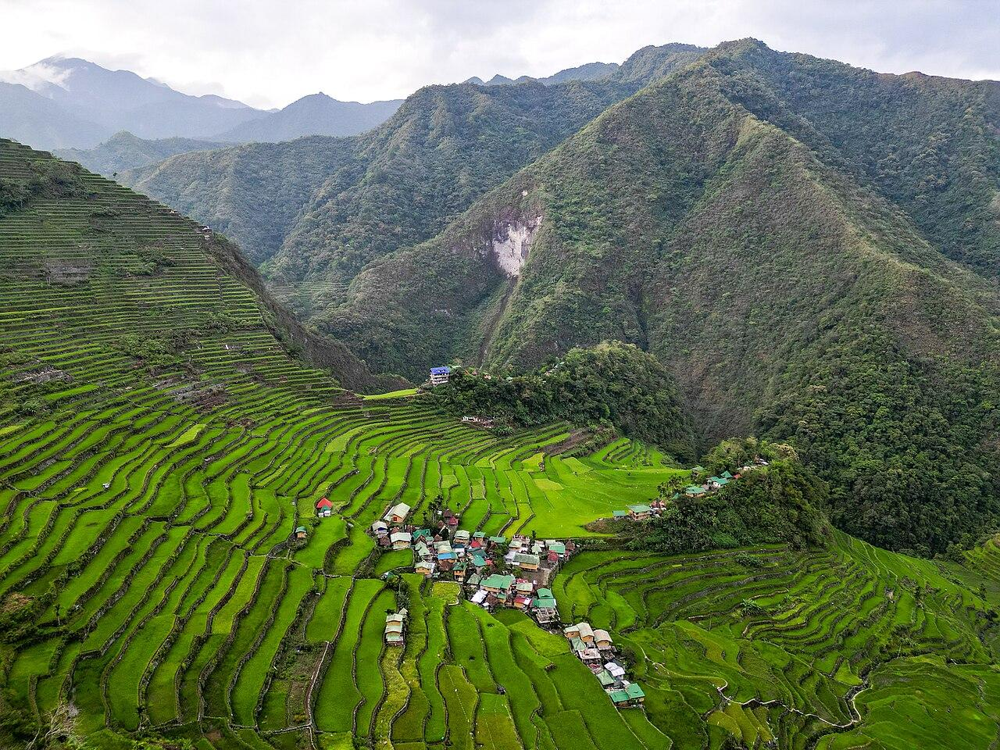
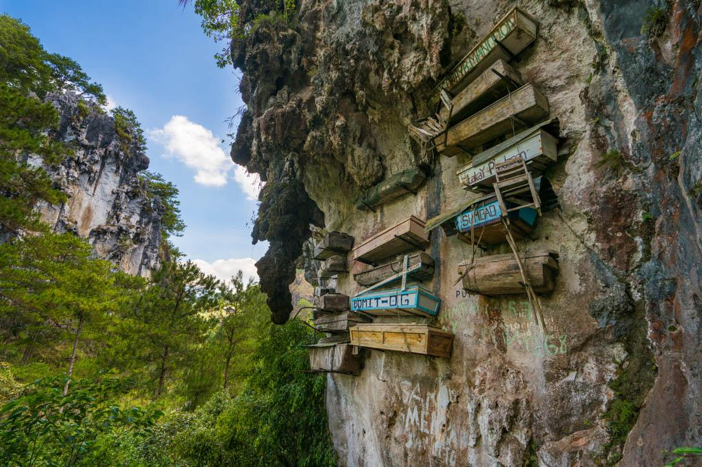
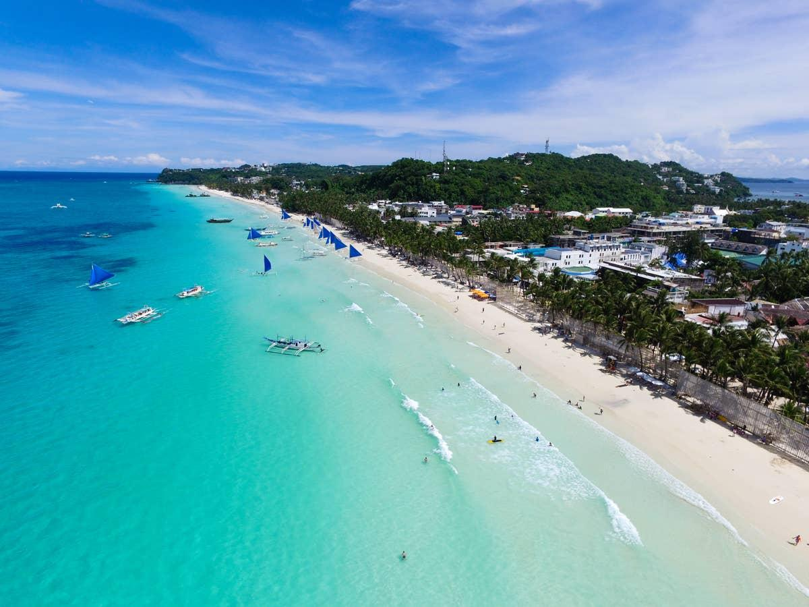
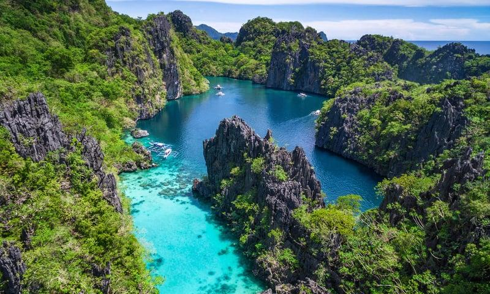
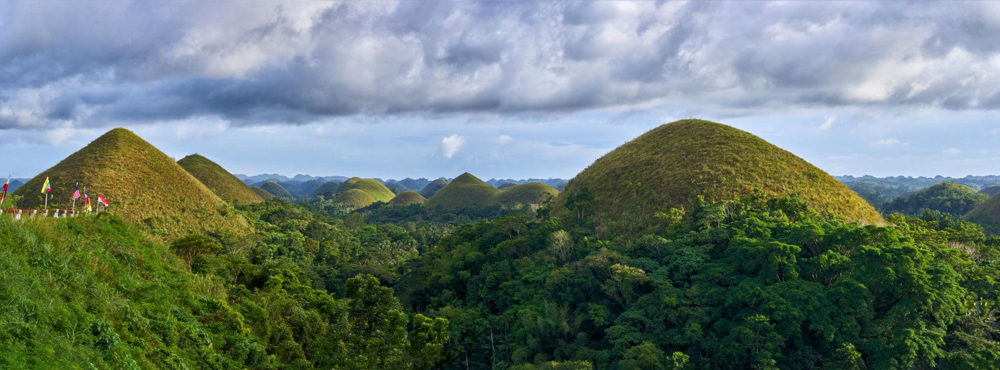

Discover the Beauty of the Philippines 🇵🇭

Where Every Island Tells a Story
Explore the Philippines and discover its beautiful destinations, amazing landscapes, and rich culture. Every place has a story waiting to be experienced!

Discover the breathtaking beauty of the Batad Rice Terraces, a UNESCO-recognized cultural landscape surrounded by majestic mountains. These ancient terraces showcase the remarkable skills, traditions, and heritage of the Ifugao people.

Explore one of the Philippines' most fascinating cultural traditions in Sagada. The Hanging Coffins reflect the ancient burial practices and beliefs of the local people, offering visitors a glimpse into the community's rich history and heritage.

Experience paradise in Boracay, famous for its powdery white sand, crystal-clear waters, and stunning sunsets. Whether you enjoy island adventures or relaxing by the beach, Boracay offers a tropical getaway like no other.

Discover the natural wonders of Palawan, home to breathtaking lagoons, towering limestone cliffs, and beautiful hidden beaches. Its incredible landscapes make it one of the most unforgettable destinations in the Philippines.

Visit Bohol, a destination filled with natural wonders, unique wildlife, and rich cultural experiences. From the famous Chocolate Hills to the adorable Philippine tarsiers, Bohol offers an adventure worth experiencing.